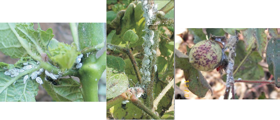
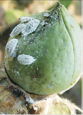

| Home |
| COTTON |
| 1. Leafhopper |
| 2. Cotton Aphid |
| 3. Thrips |
| 4. Whitefly |
| 5. Mealy Bug |
| 6. Red Cotton Bug |
| 7. Dusky Cotton Bug |
| 8. Tobacco Cutworm |
| 9. Leaf Roller |
| 10. Semiloopers |
| 11. Stem Weevil |
| 12. Shoot Weevil |
| 13. Surface Weevil |
| 14. Black Scale |
| 15. White Scale |
| 16. Yellow Stem Scale |
| Questions |
| Download Notes |
PESTS OF COTTON :: Major Pests :: Mealy Bug
5. Mealy bug: Phenacoccus solan (Pseudococcidae: Hemiptera)
Distribution and status: During the last few years mealybugs, which were considered to be minor pests in many crops have acquired the status of major pests especially in cotton, vegetables and fruits. Recently in India the cotton crop in Punjab, Rajasthan, Maharashtra and Gujarat is being seriously infested with mealybug
Host range: Polyphagous pest. Ornamental plants, fruit crops, vegetables and field crops. Ninety one host plants spread across 24 families has been recorded in India till date.
Damage symptoms: Plants infested during vegetative phase exhibit symptoms of leaf curling, distorted and bushy shoots, crinkled and/or twisted and bunchy leaves. Plants dry become stunted and dry. Late season infestation during reproductive crop stage results in late opening of bolls, reduced plant vigour, early crop senescence, affecting the yield badly.
 |
Bionomics: The body is covered with very short waxy filaments. Long tails and stripes on the body are absent. This species does not produce an egg mass or ovisac. Mealybugs are white to pink in colour and measure 3–4 mm in length. In case of M. hirsutus, eggs as well as crawlers are pink in colour. The crawlers measure 0.3 mm in length. Immature females and newly matured females are greyish-pink which are dusted with mealy white wax. Adult females are 2.5–4.0 mm long, soft-bodied, elongate oval and slightly flattened. Females are provided with 9-segmented antennae, anal lobe bars, numerous dorsal oral rim ducts on all parts of the body except the limbs and long, flagellate dorsal setae. Males have one pair of very simple wings, long antennae and white wax filaments projecting posteriorly with no mouthparts.
 |
Management
- Early crop termination
- Destruction of cotton stalks.
- Destroy alternate weed host growing on field bunds, water channels and wastelands.
- Use acid delinted seeds for sowing.
- Grow pigeonpea, bajra or maize as border crop wherever possible.
- Regulaarly monitoring of the pest.
- Neem Seed Kernel Extract (NSKE 5%) 50ml/L + Neem oil 5ml/ L + detergent powder 1gm/L or Fish oil rosin liquid 10 ml mixed with neem10ml/L or Karanj oil 10ml /L can be sprayed as spot application on infested stalks.
- Use Cryptolaemus montrouzieri adults /grub@ 10 per infested plants wherever available.
- Spray biopesticides viz., Verticillium lecanii (Potency 2 X 108 C.F.U /gm) 10gm/l and Beauveria bassiana (Potency 108 spores/ml) 10ml/l.
- Spray less hazardous insecticides, such as acephate, 75 SP 2.0 kg, malathion 50 EC 2 L, buprofezin 25 SC 2.0 L/ha. As the last option, spray moderately hazardous insecticides: Quinolphos 25 EC or Chlorpyriphos 20EC 3 L or Profenophos 50EC Thiodicarb 75WP 5.0gm/l 2.5 L in 800- 100 L of water per ha.